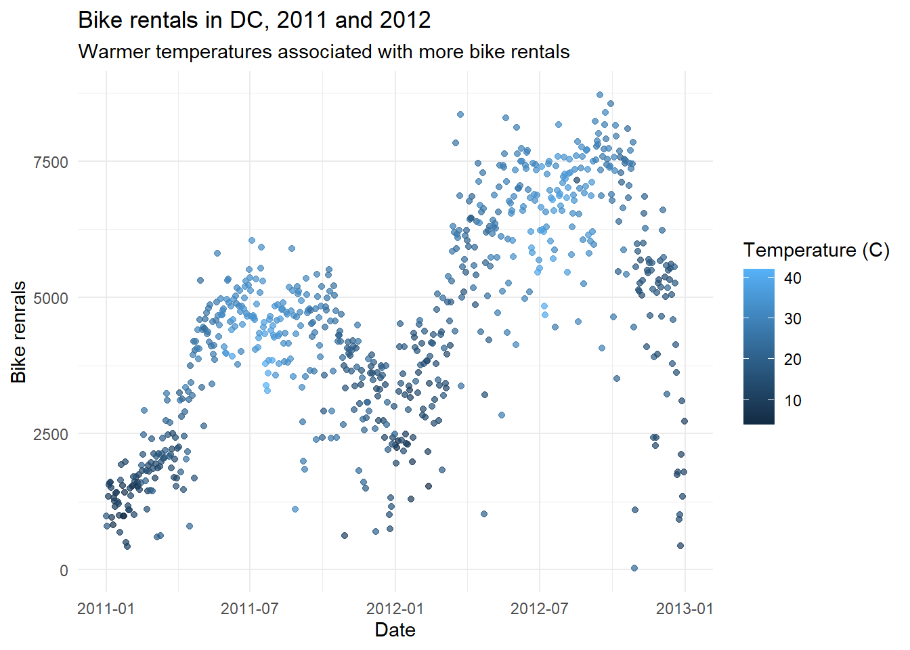
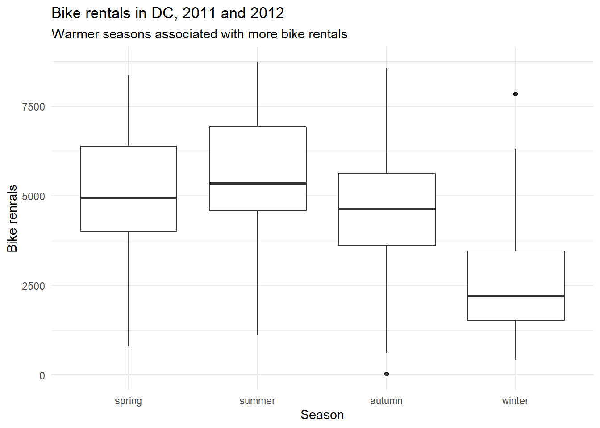

Bike sharing systems are new generation of traditional bike rentals where whole process from membership, rental and return back has become automatic. Through these systems, user is able to easily rent a bike from a particular position and return back at another position.
Currently, there are over 500 bike-sharing programs around the world, offering about 500 thousands bicycles. Interest in these systems have grown due to their increasing importance in traffic control, environmental and health issues.
Apart from interesting real world applications of bike sharing systems, the data being generated by these systems make them attractive for researchers: in contrast to other transport services such as bus or subway, the duration of travel, departure and arrival position is explicitly recorded in these systems.
This feature turns bike sharing system into a virtual sensor network that can be used for sensing mobility in the city. We might therefore be able to detect many important events in the city by monitoring these data.
Source: UCI Machine Learning Repository - Bike Sharing Dataset
As usual, you have the following resources available to you:
The data for this lab can be found here. You can find out more about the dataset by inspecting its documentation, which you can access here.
The data include daily bike rental counts (by members and casual users) of Capital Bikeshare in Washington, DC in the USA in years 2011 and 2012 as well as weather information on these days. The original data sources are taken from capital bikeshare and freemeteo.
When reading in the file, please use: bikes <- read_csv("<filename here!>")
Notice that the function we are using is read_csv(), with an underscroll (not a dot) between read and csv, not read.csv()
season variable to be a factor with meaningful level names as outlined in the codebook, with spring as the baseline level.holiday and workingday to be factors with levels no (0) and yes (1), with no as the baseline level.yr variable to be a factor with levels 2011 and 2012, with 2011 as the baseline level.weathersit variable as 1 - clear, 2 - mist, 3 - light precipitation, and 4 - heavy precipitation, with clear as the baseline.Calculate raw temperature, feeling temperature, humidity, and windspeed as their values given in the dataset multiplied by the maximum raw values stated in the codebook for each variable. Instead of over-writing the existing variables, create new ones with concise but informative names.
Check that the sum of casual and registered adds up to cnt for each record. In your report, show the code you used in order to do verify this, and explain how you know that the two columns really add up to the third. You can fill in the code snippet below:
One way of doing this is to create a new column that takes on the value TRUE if they add up and FALSE if not, and then checking if all values in that column are TRUEs.
But this is only one way, you might come up with another.
bikes <- bikes %>%
# for q1
mutate(season=fct_recode(factor(
# level 2 (spring) must be first!
season, levels=c("2","3","4","1")),
# rename the different levels
"spring"="2",
"______"="_",
"______"="_",
"______"="_")) %>%
# for q2
mutate(holiday=fct_recode(as.factor(___),
"___"="_",
"___"="_")) %>%
mutate(workingday=fct_recode(as.factor(___),
"___"="_",
"___"="_")) %>%
# for q3
mutate(yr=fct_recode(as.factor(___),
"___"="_",
"___"="_")) %>%
# for q4
mutate(weathersit=fct_recode(as.factor(___),
"___"="_",
"___"="_",
"___"="_",
"___"="_" )) %>%
# for q5
mutate(raw.temp=temp*39,
raw.atem=___*___,
raw.hum =___*___,
raw.windspeed=___*___)
#########
# for q6
bikes %>%
mutate(is.true = (cnt == ___ + ___)) %>%
pull(is.true) %>% table()🧶 Knit frequently, knit often. Look at your report, make sure it looks neat, professional and tidy.

You may want to use the code below, just make sure to fill in the missing expressions!
ggplot(bikes, aes(x = ___, y = ___, color = raw.atemp)) +
geom_point(alpha = 0.7) +
labs(
title = "______________",
subtitle = "______________",
x = "______________",,
y = "______________",
color = "______________") 
🧶 Knit frequently, knit often. Look at your report, make sure it looks neat, professional and tidy.
Fit a linear model predicting total daily bike rentals from daily temperature.
Fit another linear model predicting total daily bike rentals from daily feeling temperature.
Write the linear model, interpret the slope and the intercept in context of the data, and determine and interpret the \(R^2\).
Is temperature or feeling temperature a better predictor of bike rentals? Explain your reasoning.
mdl <- lm(cnt ~ season + yr + holiday +
workingday + weathersit + raw.temp + raw.hum + raw.windspeed, bikes)To do this question, you need to estimate a model that has multiple independent variables (aka explanatory variables). The equation would look as follows:
\[ Y_{rentals}=b_0+b_1\cdot X_{season}+b_2\cdot X_{yr}~+b_3\cdot~X_{h.day}+b_4\cdot X_{wk.day}+ b_5\cdot X_{weather}+b_6\cdot X_{r.temp}+b_7\cdot X_{hum}+b_8\cdot X_{wind} \]
Write the linear models for holidays and non-holidays.
🧶 Knit frequently, knit often. Look at your report, make sure it looks neat, professional and tidy.
Smartphones are often blamed for contributing to stress and anxiety. But they may be an effective tool for improving mental health, too. Meditation apps such as Calm and Headspace provide users with soothing audio, guided meditations and breathing exercises designed to improve mental well-being. A new paper suggests that their impact could be comparable to those of much costlier forms of in-person therapy.
Advik Shreekumar and Pierre-Luc Vautrey, of the Massachusetts Institute of Technology, recruited 2,384 Americans from Facebook and Instagram to use Headspace. Using a set of detailed mental-health questionnaires, the authors found that, after four weeks, access to the app reduced the share of participants with moderate or severe anxiety by 13 percentage points, or 50%, compared to the control group (who were placed on a waiting list for the app). The share of participants with moderate or severe depression fell by 14 percentage points, or 47%, relative to the control group.
These results should be interpreted with caution. First, participants in the study were recruited based on their interest in trying Headspace. That resulted in a sample that was younger, more female, more educated and more left-wing than the general population. Nearly 85% of participants were women, 44% held graduate degrees and less than 3% identified as Republicans. Second, the study did not include a placebo. In clinical trials, participants are assigned to receive either the treatment or a placebo. In this study such an approach was “not easily implementable,” the authors wrote, which means the mere thought of receiving an effective treatment could have been enough to ease symptoms.
The graphs below show the cumulative distribution of anxiety and depression scores, according to the Generalized Anxiety Disorder seven-item scale and the Patient Health Questionnaire, respectively.Please study the graph below carefully, read the explanation and answer the questions below:
An app a day keeps the doctor away
The Source of this study is: “Managing Emotions: The Effects of Online Mindfulness Meditation on Mental Health and Economic Behavior” by Advik Shreekumar and Pierre-Luc Vautrey, 2022
What do you notice?
After studying the graph and reading the text, what details do you see in the graph that are unusual or surprising? Looking at it carefully and paying attention to detail, what can you get out of the graph that is not necessarily obvious at first glance
What do you wonder?
Try to formulate a question, related to the graph, something that you would genuinely like to know. Please state your question clearly: as in a statement that ends with a question mark.
How does this relate to you and your community?
Think of something that makes this graph relate to you personally or to your community, however defined. Make sure that you do not talk about something that relates the graph to everyone, no matter who they are, but only to members of your community, something specific that does not related to other communities. This is your opportunity to be creative!
What’s going on in this graph? Write a catchy headline that captures the graph’s main idea.